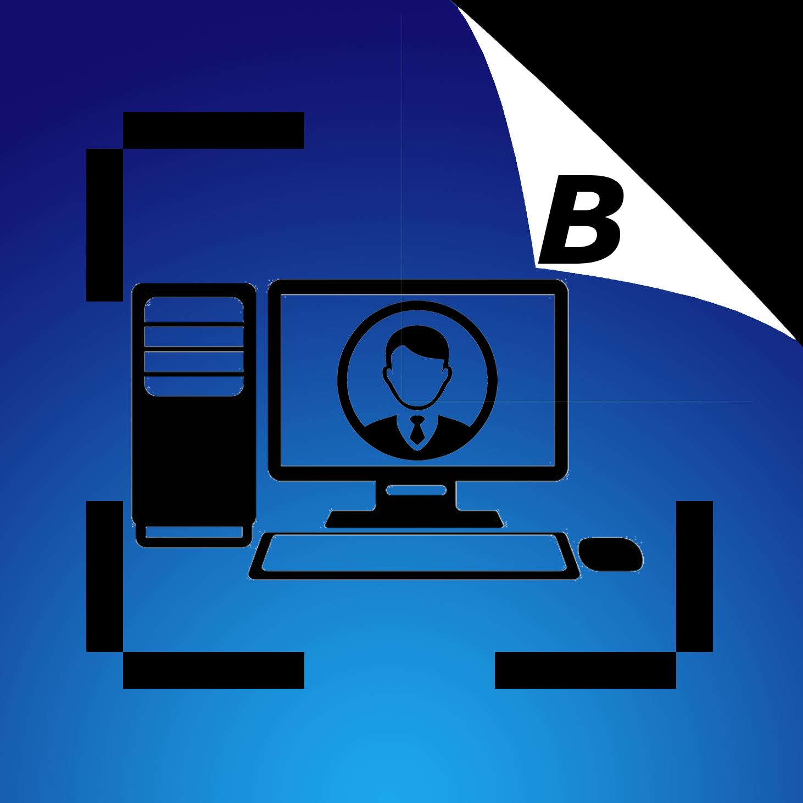

<ion-content>
    <!--Cabezera-->
    <div style="width: 100%;height: 5%;">
      <div class="page_Titulo" align="center">
        Iniciar Sesión
      </div>
    </div>

    <!--Body-->
    <div style="width: 100%;height: 90%;">      
      <div class="logoLogin" align="center">
        
      </div>
  
      <div class="page_Titulo_Aula" align="center">
        Administración de Usuarios
      </div>
  
      <ion-item class="inputsR">
        <ion-label position="floating">Correo</ion-label>
        <ion-input id="email" placeholder="ejempló@gmail.com" #email="ngModel" type="email" [(ngModel)]="user.email" required></ion-input>
      </ion-item>
  
      <span style="margin-left: 10px;font-weight: bold;" id="span_email"  *ngIf="email.touched && !email.valid && spanCorreo">
        Ingrese Correo.
      </span>
  
      <ion-item class="inputsR">
        <ion-label  position="floating">Contraseña</ion-label>
        <ion-input id="password" placeholder="Contraseña" #password="ngModel" type="password" [(ngModel)]="user.password"  required></ion-input>
      </ion-item>
      
      <span style="margin-left: 10px;font-weight: bold;" id="span_password" *ngIf="password.touched && !password.valid && spanPassw">
        Ingrese Contraseña.
      </span>

      <ion-grid style="margin-top: 10%;">
        <label id="example-radio-group-label">Accesos Rápidos:</label>
        <mat-radio-group
          aria-labelledby="example-radio-group-label"
          class="example-radio-group"
          [(ngModel)]="favoriteSeason">
          <ion-row>
            <ion-col>
              <mat-radio-button class="example-radio-button" (click)="autoLogin(1)" >
                Usuario
              </mat-radio-button>
            </ion-col>               
          </ion-row>
          <ion-row>
            <ion-col>
              <mat-radio-button class="example-radio-button" (click)="autoLogin(2)">
                Invitado
              </mat-radio-button>
            </ion-col> 
          </ion-row>
          <ion-row>
            <ion-col>
              <mat-radio-button class="example-radio-button"(click)="autoLogin(3)">
                Administrador
              </mat-radio-button>
            </ion-col>
          </ion-row>
        </mat-radio-group>
      </ion-grid>

      <div class="botones_sesion_registrar" style="margin-top: 5%;">
        <ion-button  color="mycolor" style="margin-top: 10px;height: 60px;" expand="full" (click)="onLogin()">Iniciar Sesión</ion-button>  
      </div>
            
  
      <div  class="spinner">
        <div *ngIf="!load" class="loadingio-spinner-double-ring-ndsdn9pzfwr"><div class="ldio-7yi4e77x1ct">
          <div></div>
          <div></div>
          <div><div></div></div>
          <div><div></div></div>
          </div></div>
      </div>
    </div>        
</ion-content>


